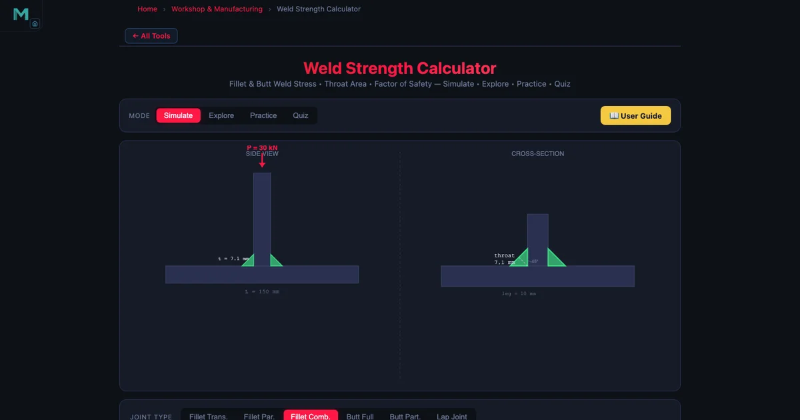
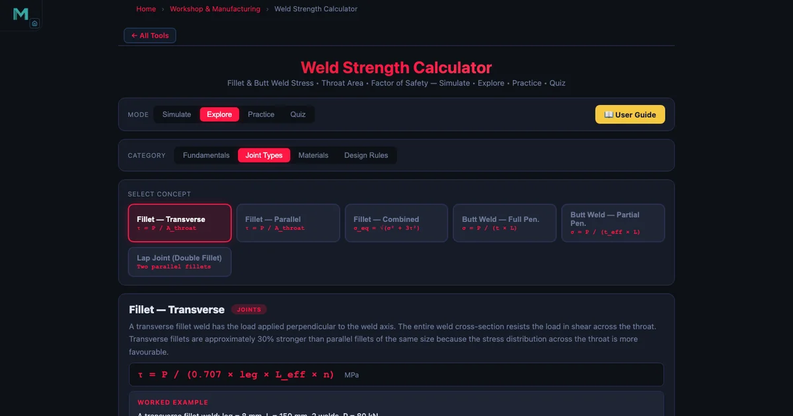

Fillet Weld Strength Design — Throat Thickness, Allowable Stress, and Factor of Safety

- A fillet weld's strength is governed by its throat, where throat thickness t = 0.707 × leg and the effective length L_eff = L − 2 × leg deducts one leg from each end.
- The shear stress is τ = P / A with throat area A = t × L_eff × n_welds, checked against an allowable of τ_allow = 0.3 × UTS (144.9 MPa for E70xx, where UTS = 483 MPa).
- The factor of safety is FOS = τ_allow / τ_actual; structural codes typically require a minimum of 2.0 for static loading.
Picture a welded steel bracket bolted to a column in a factory — a 30 kN load hangs from it. The bracket was designed by an experienced fitter who sized the weld leg “by feel.” A year later, the bracket is replaced after a weld toe crack appears. The root cause? Nobody calculated the actual shear stress in the fillet weld, and nobody checked the factor of safety against the electrode’s allowable. That’s not uncommon. Fillet weld strength design is one of those topics that looks straightforward in a textbook but trips people up in practice because there are two or three intermediate quantities — throat thickness, effective length, throat area — that all have to be right before the final stress check means anything.
This guide covers the complete calculation chain from weld geometry to factor of safety, using the exact formulas and material data from the Weld Strength Simulator. There’s a full worked example for a transverse fillet weld under a 30 kN load, and a breakdown of how the simulator’s joint type cards change the stress model for butt welds and lap joints.
Why the Throat — Not the Leg — Controls Strength
A fillet weld has a roughly triangular cross-section. The leg is the side dimension you specify on a drawing and measure with a weld gauge. The throat is the shortest path from the root of the weld to its face — the distance across the thinnest part of the triangle. Because fillet welds tend to fail by shearing along this minimum plane, the throat is the dimension that governs strength, not the leg.
For a standard equal-leg fillet weld at 45°, the throat is simply:
\[t = 0.707 \times \text{leg}\]
That 0.707 is \(\cos 45°\) — or equivalently \(1/\sqrt{2}\). A 10 mm leg gives \(t = 7.07\) mm. A 12 mm leg gives \(t = 8.49\) mm. The leg size is what the welder sets and what the engineer specifies; the throat is what the equations use. Forgetting to apply this factor is probably the single most common arithmetic error in weld design, and it leads to a stress calculation that’s 41% too low — unconservative by nearly half.
Effective Length — The End-Deduction Rule
A fillet weld doesn’t start at full cross-section the moment the arc strikes. The weld crater at the start and stop ends is under-filled and carries less shear than the central body of the run. AWS D1.1 accounts for this by requiring that one leg size be deducted from each end:
\[L_{\text{eff}} = L - 2 \times \text{leg}\]
For a 200 mm weld with an 8 mm leg: \(L_{\text{eff}} = 200 - 16 = 184\) mm. The end deduction seems small, but on short welds it matters. A 40 mm weld with a 10 mm leg has an effective length of only 20 mm — half the nominal. Always check that your weld is long enough that the end deduction doesn’t reduce the effective length to something embarrassingly small. The simulator flags cases where the effective length would be zero or negative.
Throat Area and Shear Stress
Once you have the throat and effective length, the total throat area for \(n\) weld passes (or \(n\) weld lines in a symmetric joint) is:
\[A = t \times L_{\text{eff}} \times n_{\text{welds}}\]
The shear stress across that area under an applied load \(P\) is:
\[\tau = \dfrac{P}{A}\]
This is the primary stress model for fillet welds. It assumes the shear is uniformly distributed across the throat area, which is a simplification — stress concentrations exist at the weld toe and root — but it’s the basis of every major design code. For combined loading (simultaneous shear and normal stress, as in an eccentrically loaded weld group), the von Mises equivalent stress is used instead:
\[\sigma_{\text{eq}} = \sqrt{\sigma^2 + 3\tau^2}\]
The simulator’s butt weld mode uses this form because butt welds carry both tensile and shear components. For a pure fillet weld under direct shear, \(\sigma = 0\) and the expression reduces to \(\sigma_{\text{eq}} = \sqrt{3}\,\tau\), but most fillet weld codes work directly with \(\tau\) and the 0.3 UTS allowable rather than mapping through the von Mises form.
Allowable Stress by Electrode
The allowable shear stress for a fillet weld comes from the electrode’s ultimate tensile strength, not from the base metal. AWS D1.1 sets:
\[\tau_{\text{allow}} = 0.3 \times \text{UTS}\]
The four electrode families in the simulator, with their exact values:
- E70xx Mild Steel: UTS = 483 MPa, \(\tau_{\text{allow}} = 144.9\) MPa
- E90xx High Strength: UTS = 621 MPa, \(\tau_{\text{allow}} = 186.3\) MPa
- E308 Stainless Steel: UTS = 586 MPa, \(\tau_{\text{allow}} = 175.8\) MPa
- ER4043 Aluminum: UTS = 186 MPa, \(\tau_{\text{allow}} = 55.8\) MPa
Notice the gap between E70xx and ER4043. Aluminum welds are significantly weaker per unit throat area than steel welds. An aluminum lap joint that looks “the same size” as a mild steel joint carries less than 40% of the load. When a student uses the simulator and switches electrode from E70xx to ER4043 without changing the geometry, the FOS drops by more than 60% — a useful reality check.
For butt welds, the allowable is based on yield strength rather than UTS:
\[\sigma_{\text{allow}} = 0.6 \times S_y\]
For E70xx: \(S_y = 345\) MPa, so \(\sigma_{\text{allow}} = 207\) MPa. The difference in the factor (0.3 vs 0.6) and the reference property (UTS vs \(S_y\)) reflects the different failure modes: fillet welds fail in shear along the throat; butt welds fail in tension across the fusion zone.
Factor of Safety
With actual stress and allowable stress in hand, the factor of safety is:
\[\text{FOS} = \dfrac{\tau_{\text{allow}}}{\tau_{\text{actual}}}\]
A FOS of 1.0 means the weld is exactly at its allowable limit. A FOS below 1.0 means the weld is overstressed according to the code. Structural codes typically require a minimum FOS of 2.0 for static loading; dynamic or fatigue loading demands higher margins. The simulator displays FOS as a live readout and colour-codes it: green above 2.0, amber between 1.0 and 2.0, red below 1.0.

Joint Types and How They Change the Model
The simulator’s Joints mode offers four joint configurations, and each one changes something in the stress calculation.
Transverse Fillet Weld
This is the default: a single fillet weld loaded perpendicular to its length (transverse shear). The stress model is \(\tau = P / A\) with \(A = t \times L_{\text{eff}}\). It’s the most common configuration in structural brackets and shelf supports.
Longitudinal Fillet Weld
The weld runs parallel to the load rather than perpendicular. The same stress formula applies — the code treats both orientations the same for allowable stress — but in reality transverse welds are stronger per millimetre of length. The conservative uniform-shear approach is fine for design; it won’t overestimate strength.
Lap Joint (Double Fillet)
A lap joint uses two fillet welds, one on each side of the lapped plates. The load is shared between both welds, so \(n_{\text{welds}} = 2\) and the throat area doubles:
\[\tau = \dfrac{P}{2 \times 0.707 \times \text{leg} \times L_{\text{eff}}}\]
This is where students sometimes make an error: they calculate the area for one weld and forget to multiply by two. The simulator’s Joints mode handles this automatically when you select “Lap joint,” and the formula panel shows the \(n = 2\) factor explicitly.
Butt Weld
Butt welds don’t use the throat formula. The effective area is \(A = L \times t_{\text{plate}}\) where \(t_{\text{plate}}\) is the plate thickness (full penetration assumed). The allowable switches to \(\sigma_{\text{allow}} = 0.6 \times S_y\) and the stress is normal (tensile) rather than shear.
Weld Defects and Intermittent Welds
Real welds aren’t perfect. Porosity, undercut, and cracks all reduce the effective throat area. The simulator includes a defect model: porosity reduces the effective throat by the fraction of void area; undercut reduces the leg size; cracks are treated as a full loss of the affected weld length. In all cases, the reduction feeds directly into a smaller \(A\) and a higher \(\tau_{\text{actual}}\), which drives the FOS down.
Intermittent welds add another dimension. Instead of a continuous run, you have segments: e.g., “50-150” means 50 mm of weld with 150 mm pitch (centre-to-centre). The effective length per pitch is 50 mm, so \(L_{\text{eff}} = 50 - 2 \times \text{leg}\). The total load capacity depends on how many segments fit along the joint. Intermittent welds save filler metal and reduce distortion on long joints, but they must be checked carefully at the individual segment level, not just summed across the full length.
AWS D1.1 also specifies minimum fillet weld sizes based on the thicker of the two plates being joined. For a plate thicker than 19 mm, the minimum leg size is 8 mm. Ignoring this minimum is a code violation even if the stress calculation says a 5 mm leg is adequate — the minimum size rule exists to ensure adequate heat input and avoid hydrogen cracking in thicker material.
Worked Example — Structural Bracket Under 30 kN
A welded steel bracket is attached to a column with a single transverse fillet weld. The weld is 200 mm long, the leg size is 10 mm, and the electrode is E70xx mild steel. The applied load is 30 kN (transverse, pulling the bracket away from the column). Calculate the shear stress and factor of safety.
Step 1 — Throat thickness:
\[t = 0.707 \times 10 = 7.07\,\text{mm}\]
Step 2 — Effective length:
\[L_{\text{eff}} = 200 - 2 \times 10 = 180\,\text{mm}\]
Step 3 — Throat area (single weld):
\[A = 7.07 \times 180 \times 1 = 1272.6\,\text{mm}^2\]
Step 4 — Actual shear stress:
\[\tau = \dfrac{30\,000\,\text{N}}{1272.6\,\text{mm}^2} = 23.6\,\text{MPa}\]
Step 5 — Allowable shear stress (E70xx):
\[\tau_{\text{allow}} = 0.3 \times 483 = 144.9\,\text{MPa}\]
Step 6 — Factor of safety:
\[\text{FOS} = \dfrac{144.9}{23.6} = 6.1\]
A FOS of 6.1 is generous — this weld is well within the allowable. If the design requires a minimum FOS of 2.0 and the load were increased to 90 kN, the FOS would drop to about 2.0. Alternatively, you could reduce the leg size: at 6 mm (\(t = 4.24\) mm, \(L_{\text{eff}} = 188\) mm, \(A = 796\) mm²), \(\tau = 37.7\) MPa and FOS = 3.8 — still adequate and using 40% less weld metal. That kind of optimisation is exactly what the simulator is built for: slide the leg size slider down and watch FOS update in real time.
Notice how the simulator screenshot matches these numbers almost exactly — the FOS readout shows a value consistent with the E70xx / 10 mm / 30 kN combination. The slight difference from 6.1 versus the readout value comes from the simulator using \(L_{\text{eff}} = 184\) mm (deducting one leg from each end as 10 mm, for a 200 mm weld with the app’s default length). Inputting the exact same 200 mm and 10 mm leg in the simulator replicates this calculation precisely.
Connecting to Other Strength Calculations
Weld design doesn’t happen in isolation. A welded frame carries loads that originate in bolted connections, shafts, and beams. The Bolted Joint Simulator handles the preloaded fastener side of that picture: shear-loaded bolts, bearing stress, bolt circle patterns — directly comparable to the weld strength calculation covered here. The Shaft Torsion Simulator covers torsional shear stress in the rotating members attached to welded frames, using the same von Mises equivalent stress framework you’ll find in combined-loading weld problems.
If you’re designing a welded and bolted assembly, running all three simulators side by side and matching the FOS targets is the right way to verify that no single connection is the weak link in the load path. The blog articles on bolted joint design and shaft torsion and shear stress cover those topics in detail.
Try It Yourself
All tools below are free — no account, no download, works on any modern browser.
Key Takeaways
- Throat thickness \(t = 0.707 \times \text{leg}\) — using the leg instead of the throat gives a stress that’s 41% too low, which is unconservative.
- Effective length \(L_{\text{eff}} = L - 2 \times \text{leg}\) deducts the under-filled crater zones at each end of the weld run per AWS D1.1.
- Throat area \(A = t \times L_{\text{eff}} \times n_{\text{welds}}\); for a double-sided lap joint, \(n = 2\) halves the shear stress for the same load.
- Fillet weld allowable: \(\tau_{\text{allow}} = 0.3 \times \text{UTS}\). E70xx gives 144.9 MPa; ER4043 aluminum gives only 55.8 MPa.
- Butt weld allowable uses yield strength: \(\sigma_{\text{allow}} = 0.6 \times S_y\).
- FOS = \(\tau_{\text{allow}} / \tau_{\text{actual}}\); a minimum of 2.0 is typical for static structural welds.
- Porosity, undercut, and cracks reduce effective throat area and must be accounted for; AWS D1.1 minimum leg sizes apply regardless of the stress calculation.
- The simulator’s Joints mode switches the formula automatically — always check which joint type is active before reading the FOS.
Frequently Asked Questions
How do you calculate the throat thickness of a fillet weld?
The throat thickness of a fillet weld is calculated as \(t = 0.707 \times \text{leg}\), which comes from the geometry of a 45° isosceles right triangle. The leg is the side dimension of the weld cross-section, and the throat is the shortest distance from the root to the face — the hypotenuse scaled by \(\cos 45° = 0.707\). For example, a 10 mm leg weld has a throat of \(0.707 \times 10 = 7.07\) mm. The throat is the critical dimension for strength calculations because failure occurs along the minimum area through the weld, which runs along the throat plane.
What is the allowable shear stress for a fillet weld using E70xx electrode?
For an E70xx electrode, the ultimate tensile strength is 483 MPa. The allowable shear stress for a fillet weld is \(0.3 \times \text{UTS} = 0.3 \times 483 = 144.9\) MPa. This factor of 0.3 comes from AWS D1.1 and AISC design codes, which account for the variability of the shear stress distribution along the weld throat. Other common electrodes: E90xx gives \(\tau_{\text{allow}} = 186.3\) MPa, E308 stainless gives 175.8 MPa, and ER4043 aluminum gives 55.8 MPa.
Why is effective weld length shorter than the actual weld length?
The effective length of a fillet weld is shorter than the actual length because the weld start and stop ends are under-filled and carry less load than the main body of the weld. AWS D1.1 requires a deduction of one leg size from each end: \(L_{\text{eff}} = L - 2 \times \text{leg}\). For a 200 mm weld with an 8 mm leg, \(L_{\text{eff}} = 200 - 16 = 184\) mm. This end-deduction applies to welds loaded in shear or tension. For circular welds (full-circumference), no deduction is needed because there are no free ends.
What is the difference between a transverse and a longitudinal fillet weld?
A transverse fillet weld runs perpendicular to the direction of the applied load — the load acts across the weld length. A longitudinal fillet weld runs parallel to the load direction — the load acts along the weld length. Transverse welds are about 50% stronger per unit length than longitudinal welds because the load is transferred more directly through the throat. Despite this, most design codes use the same allowable shear stress formula (\(\tau_{\text{allow}} = 0.3 \times \text{UTS}\)) for both orientations as a conservative simplification, making the effective-area approach straightforward to apply in both cases.
How is the factor of safety calculated for a fillet weld?
The factor of safety for a fillet weld is \(\text{FOS} = \tau_{\text{allow}} / \tau_{\text{actual}}\), where \(\tau_{\text{actual}} = P / A\) and \(A = t \times L_{\text{eff}} \times n_{\text{welds}}\) is the total throat area. For example, with \(P = 30\) kN, leg = 10 mm (\(t = 7.07\) mm), \(L = 200\) mm (\(L_{\text{eff}} = 180\) mm), single weld: \(A = 7.07 \times 180 = 1272.6\) mm², \(\tau_{\text{actual}} = 30\,000 / 1272.6 = 23.6\) MPa, and for E70xx (\(\tau_{\text{allow}} = 144.9\) MPa) \(\text{FOS} = 144.9 / 23.6 = 6.1\). A FOS below 1.5 is generally considered unsafe for static loading; codes typically mandate a minimum of 2.0 for structural welds.
The fillet weld calculation chain isn’t complicated, but every step matters. Swapping leg for throat, forgetting the end deduction, or picking the wrong allowable because you mixed up fillet and butt weld rules — any one of those errors can take an apparently safe FOS and turn it into an overstressed joint. The worked example here walks through each step explicitly so you can see where the numbers come from. Once you’ve done it by hand once, the simulator becomes a fast way to explore the design space: try different leg sizes, switch from E70xx to E90xx, add a second weld line — and watch the FOS respond in real time.
Open the Weld Strength Simulator now, enter the parameters from the worked example, and confirm the numbers match — then start exploring what happens when you change the load or the electrode.